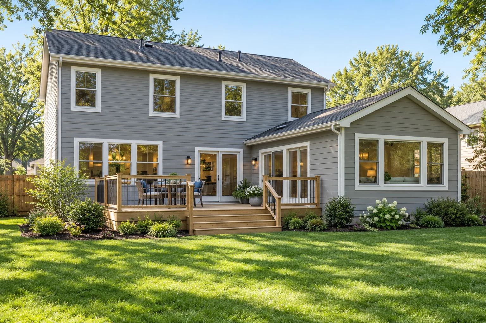
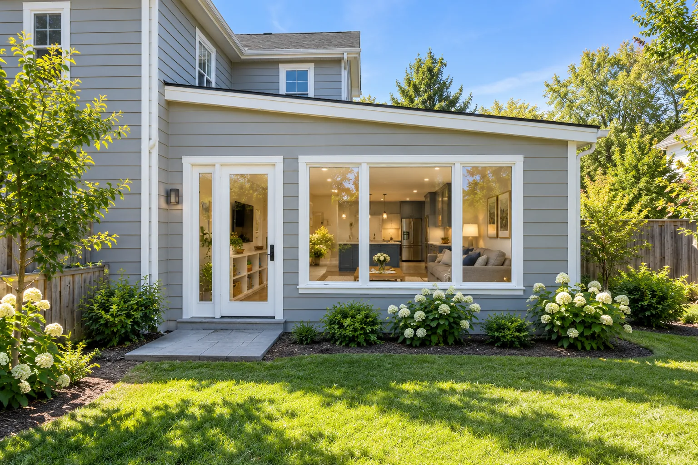
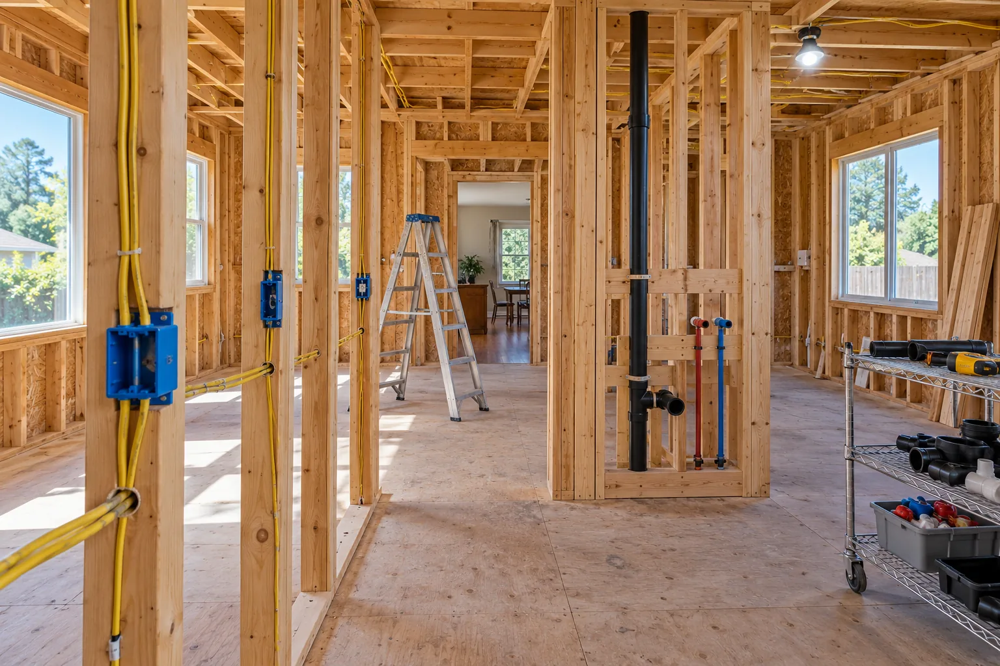

Kitchen & Bathroom Remodeling
Most of our remodeling work is kitchens and bathrooms, along with basements, laundry rooms and the rooms in between.
Learn moreGeneral contractor in Columbus, Westerville, Dublin & Hilliard
GOODSTEAD is a local general contractor for kitchens, bathrooms, additions and garage conversions. We walk the house with you, explain what the job really involves, and put the whole scope in writing before any work starts.
Over 500 home projects completed

What we do
Most of our remodeling work is kitchens and bathrooms, along with basements, laundry rooms and the rooms in between.
Learn more
For when the house is simply too small.
Learn more
Bigger projects with a lot of trades.
Learn moreReviews from Columbus-area homeowners
“We always knew what was in the price and what we still had to pick out, down to who was buying the light fixtures.”